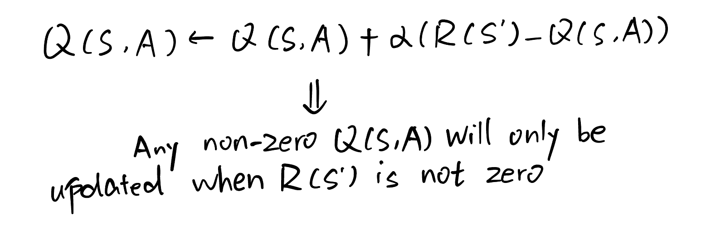

Jan 12, 2026
By the time I replicated the algorithm, my prior knowledge is: intro to machine learning from Stanford online by Andrew Ng, and college level calculus.
At the first glance, I think the core part about reinforcement learning is feedback. A positive feedback will reinforce the agent’s current behavior, while a negative feedback will discourage it. Meanwhile, reinforcement learning has multiple status, while supervised and unsupervised learning don’t.
Q(S, A) ← Q(S, A) + α [ R(S') + γ maxQ(S′, a) − Q(S, A) ]
The formula above describes the update rule for Q(S, A). Where:
Collectively, all Q-values defined over states and actions form a Q-table, which, once trained, serves as a decision-making guide for the agent.
Thinking: When I first encountered this algorithm, I had doubts about the term max Q(S′, a). I initially thought it was unnecessary, since the reward R already provides positive or negative feedback for updating the Q-value. However, after experimenting with the algorithm multiple times, I realized that this term is essential: it propagates information about the next state’s value back to the current state, allowing future rewards to influence present decisions.
For example, at the very beginning, all Q-values are initialized to zero. If the term max Q(S′, a) is removed and the reward R is only given when the agent reaches the goal state, then only the Q-values associated with the second-to-last state would ever be updated to a non-zero value. All earlier states would remain unchanged.
In contrast, when the term max Q(S′, a) is included, once the terminal state’s Q-value becomes non-zero, its value can be propagated backward through successive states. As a result, future rewards are gradually transferred to earlier states, allowing all relevant Q-values to be updated.
I began to implement the Q Learning algorithm on a very simple problem: to find the route to the goal cell as well as avoiding the obstacle cell in a 3*3 grid.
In this problem, there are only 3*3 = 9 states (each cell in the grid represents a state), and only 4 actions (up, down, left, right). Thus the Q Table is extremely simple: merely a 9*4 table.
As for the reward table, the design is also very simple: the goal cell is assigned a reward of +10, the obstacle cell is assigned a reward of −10, and all other cells have a reward of 0.
After updating the Q Table for 100000 times, the trained Q Table is not only able to guide the agent to the goal cell while avoiding the obstacle cell, but also make sure the path it chooses based on sequential actions is the shortest one. My interpretation is that, as Q-values are updated over time, states along shorter paths gain an advantage because they receive the positive update from the goal cell reward earlier, thus the initial Q table value that leads to the optimal path receives a stronger reinforcement signal from the goal cell.
Now let's dive deeper into Tic Tac Toe, the tricky part is there needs 2 agents (player X and player O) to compete and train each other (Let's assume player X always plays first and player O always plays after X). The first thing came into my mind is to use 2 Q Value tables (one for player X and the other for player O).
Initialize Q tables: In the game tic tac toe, each cell has 3 possible states (occupied by X, O or nothing), With 9 cells in total, this results in 3^9 =19,683 possible states. Precomputing a full Q-table for all states would be cumbersome, as it would require mapping each state index to a corresponding state tuple using a ternary encoding scheme. To avoid this complexity, I instead use a defaultdict function, which allows Q-values to be initialized lazily only when a new state is encountered.
Q_Table_X = defaultdict(lambda: np.zeros(9)) # Initialize Q Table for player X
Q_Table_O = defaultdict(lambda: np.zeros(9)) # Initialize Q Table for player O
Define the Reward Policy function: The reward function is much easier than the Q Table, The reward is given only when three identical symbols appear in a row. Conversely, a penalty is applied when the opponent achieves three identical symbols in a row. Here I also defined 2 reward functions for player X and O respectively:
WIN_LINES = [
(0, 1, 2), # rows
(3, 4, 5),
(6, 7, 8),
(0, 3, 6), # columns
(1, 4, 7),
(2, 5, 8),
(0, 4, 8), # diagonals
(2, 4, 6)
]
def Reward_Value_X(state):
for a, b, c in WIN_LINES:
line_sum = state[a] + state[b] + state[c]
if line_sum == 3:
return 1, True # X wins
elif line_sum == -3:
return -1, True # O wins
if 0 not in state:
return 0, True # draw
return 0, False # game not finished
def Reward_Value_O(state):
for a, b, c in WIN_LINES:
line_sum = state[a] + state[b] + state[c]
if line_sum == 3:
return -1, True # X wins
elif line_sum == -3:
return 1, True # O wins
if 0 not in state:
return 0, True # draw
return 0, False # game not finished
Define the E-greedy function: This function is to make sure even when there exists optimal Q Value at state S, we still keep some randomness to explore other possible actions (This is particularly true early in training, when the action associated with the current maximum Q-value at state S may not yet be optimal.)
def epsilon_greedy(Q, state, epsilon):
"""
Q: defaultdict(lambda: np.zeros(9))
state: length-9 tuple
epsilon: exploration rate in [0, 1]
return: an action index 0..8 that is legal
"""
legal_actions = [i for i in range(9) if state[i] == 0]
# if no legal moves, game is over
if not legal_actions:
return None
# Explore: with probability epsilon
if random.random() < epsilon:
return random.choice(legal_actions)
# Exploit: choose best legal action (break ties randomly)
q_values = Q[state]
best_value = max(q_values[a] for a in legal_actions)
best_actions = [a for a in legal_actions if q_values[a] == best_value]
return random.choice(best_actions)
Define the Next State function: It's not hard after we received the action information from the E-greedy function, but still worthy to be packaged into a function.
def Next_State(state, action, next_player):
s = list(state) # convert to list so we can modify
s[action] = next_player # place mark
return tuple(s) # convert back to tuple (hashable)
Define the Q-Value update function: This function is implemented completely based on the Q learning algorithm. Since I created 2 Q tables here, I needed 2 update functions.
def Q_Value_X_after(state, action, next_state, reward, done):
legal_next = [i for i in range(9) if next_state[i] == 0]
if done == True:
Q_Table_X[state][action] = (Q_Table_X[state][action]
+ alpha * (reward - Q_Table_X[state][action]))
else:
Q_Table_X[state][action] = (Q_Table_X[state][action]
+ alpha * (reward
- gamma * max(Q_Table_O[next_state][a] for a in legal_next)
- Q_Table_X[state][action]))
def Q_Value_O_after(state, action, next_state, reward, done):
legal_next = [i for i in range(9) if next_state[i] == 0]
if done == True:
Q_Table_O[state][action] = (Q_Table_O[state][action]
+ alpha * (reward - Q_Table_O[state][action]))
else:
Q_Table_O[state][action] = (Q_Table_O[state][action]
+ alpha * (reward
- gamma * max(Q_Table_X[next_state][a] for a in legal_next)
- Q_Table_O[state][action]))
The main training part: The core idea of this part is to let agents play against each other alternatively based on current trained Q tables. Each turn it plays, the Q table (X or O) will be updated. If we let them play a sufficient number of episodes, the Q table will converge and can reach a relatively satisfied result.
# Initialize the epsilon value to 0.5 (i.e. 50% chance it explores)
epsilon = 0.5
# Initialize the alpha value to 0.5
alpha = 0.5
# Initialize the gamma value to 0.5
gamma = 0.5
X_win = 0
O_win = 0
draw = 0
for epsiode in range(100000):
next_player = 1 # First action comes from player (X)
done = False
# Initialize the initial state of the agent
state = (0, 0, 0,
0, 0, 0,
0, 0, 0)
while not done:
if next_player == 1: # Player (X)'s turn
# E policy
action = epsilon_greedy(Q_Table_X, state, epsilon)
# Next State
next_state = Next_State(state, action, next_player)
# Update Q Table
reward, done = Reward_Value_X(next_state)
if reward == 0 and done == True:
draw += 1
if reward == 1:
X_win += 1
Q_Value_X_after(state, action, next_state, reward, done)
state = next_state
elif next_player == -1: # Player (O)'s turn
# E policy
action = epsilon_greedy(Q_Table_O, state, epsilon)
# Next State
next_state = Next_State(state, action, next_player)
# Update Q Table
reward, done = Reward_Value_O(next_state)
if reward == 0 and done == True:
draw += 1
if reward == 1:
O_win += 1
Q_Value_O_after(state, action, next_state, reward, done)
state = next_state
next_player *= -1 # Switch the player
epsilon *= 0.99 # Converge the epsilon value as epsiode goes
print("Times player X wins: ", X_win)
print("Times player O wins: ", O_win)
print("Times draw: ", draw)
After training for 100000 episodes, the result shows the Q tables for both player X and O are nearly optimal: with around 91.9% draw rate when playing against each other. Player X has a 5.22% winning rate while player O has a 2.91% winning rate.
When playing with random opponent (I simulated it by assigning it an all-zero Q table) with trained agents, agent X has a 0 losing rate while 96.7% chance to beat the opponent; agent O also has a 0 losing rate while 77.7% chance to beat the opponent.
Last modified on Jan 12, 2026